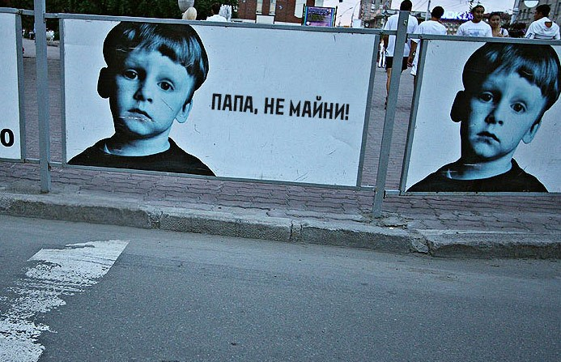
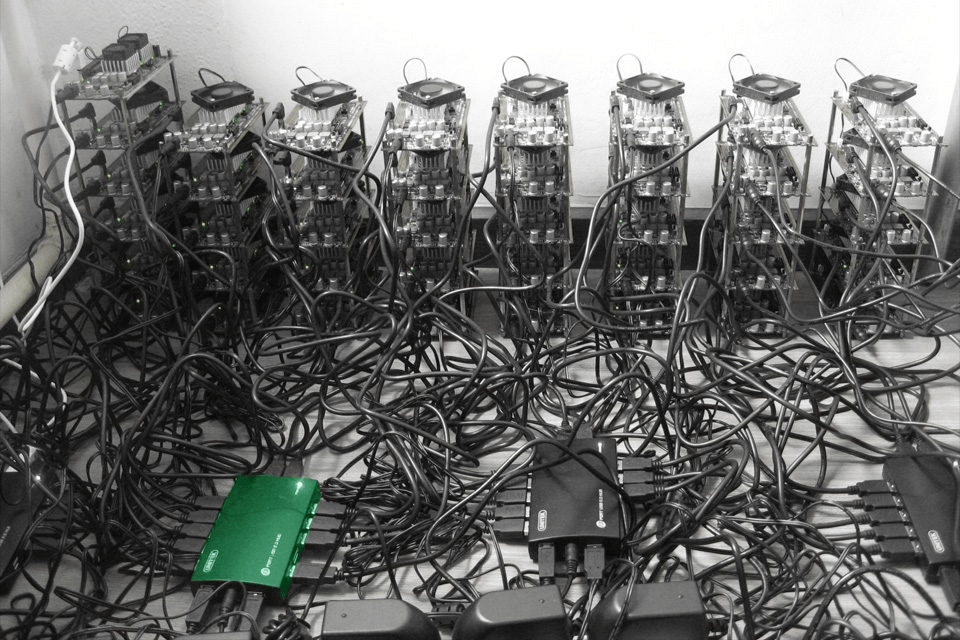
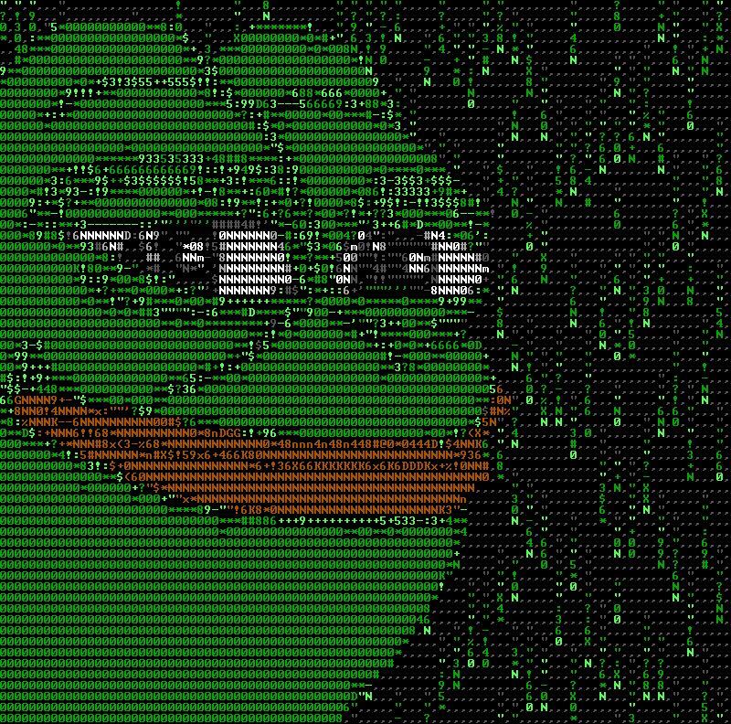

Чтобы достичь консенсуса относительно того, какие блоки транзакций действительно должны быть добавлены в цепочку блоков и для того, чтобы банально создавать эти блоки данных, некоторые пользователи участвуют в так называемом процессе майнинга (с англ. mining — добыча (руды), горное дело. Нужно понимать, что для того, чтобы пользоваться криптовалютой, ее не обязательно «добывать», — прим. ред).
Эти так называемые майнеры с помощью вычислительных мощностей своего оборудования выполняют все более и более сложные математические вычисления для того, чтобы «доказать выполнение работы». Proof-of-work (доказательство работой) — это одна из форм экономического регулирования блокчейна. Придумана она была для того, чтобы предотвратить различные атаки с использованием вычислительных мощностей, такие как фальшивые записи, отказы в проведении транзакции, спам и так далее.
Поскольку эффективный майнинг сейчас — чрезвычайно дорогое мероприятие (если речь идет об «основных» криптовалютах, например, биткоине), отдельный человек не может начать добавлять собственные блоки в обход правил без одобрения всей сети. Остальные просто не признают их настоящими. Глобальные изменения возможны только при концентрации 51% вычислительных мощностей, что приведет лишь к созданию новой «ветви» блоков — так называемому форку. Фактически, это происходило и уже не раз, так как технологии почти десять лет. При этом форк-ветка не совместима с оригинальной, но может развиваться параллельно. Концепция понятна, теперь давайте повнимательнее посмотрим на майнеров.
В 2009 году, когда о Биткойне знали только энтузиасты (или скорее даже только его создатели) и стоил он по пять центов за штуку, майнить было легко. Майнеров было немного, допустим, сто. А значит, в среднем за сутки условному майнеру Иннокентию хоть раз выпадала удача натрясти блок и получить награду.
К 2013 году, когда курс Биткойна подрос до сотни долларов за штуку, энтузиастов-майнеров было уже столько, что ждать удачи пришлось бы месяцами. Майнеры стали объединяться в «пулы». Это такие картели, которые трясут один и тот же блок-кандидат все вместе, а потом делят награду на всех по справедливости (пропорционально затраченным усилиям).
Потом появились специальные устройства — ASIC. Это такие микросхемы, которые созданы специально для выполнения конкретной задачи. В данном случае «асики» узко заточены под то, чтобы как можно более эффективно «трясти» блоки Биткойна.
Майнинг-мощность «асиков» несопоставимо больше мощности обычного компьютера, который умеет выполнять любые расчеты. В Китае, Исландии, Сингапуре и других странах стали строить огромные «фермы» из систем на ASIC. Выгодно расположить ферму в шахте под землей, потому что там холодно. Еще выгоднее рядом построить ГЭС, чтобы электричество было дешевле.
Итогом этой гонки вооружений стало то, что майнить именно биткойны в домашних условиях стало совершенно неоправданно.
